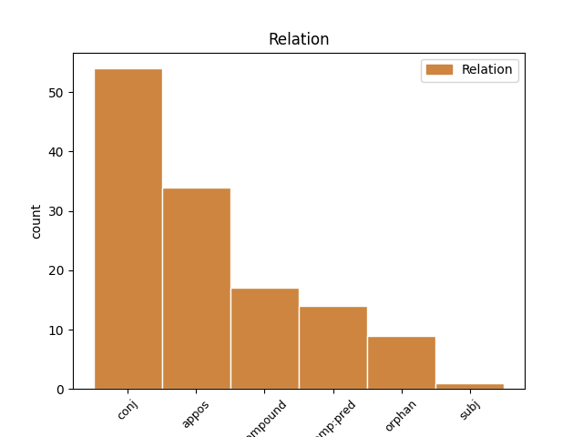
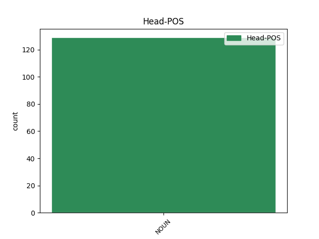
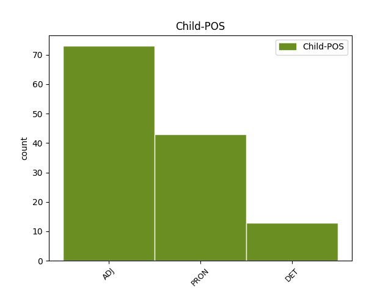

Distribution of features within this leaf



Agreement Rules sorted by frequency.
- When the dependent token is the conjunct(conj) of the head token, and the head token is NOUN and the dependent token is ADJ.
1 Vi _ _ _ _ 0 _ _ _
2 norske _ _ _ _ 0 _ _ _
3 muslimer _ _ _ _ 0 _ _ _
4 ønsker _ _ _ _ 0 _ _ _
5 godt _ _ _ _ 0 _ _ _
6 integrert _ _ _ _ 0 _ _ _
7 samfunn _ _ _ _ 0 _ _ _
8 hvor _ _ _ _ 0 _ _ _
9 muslimer muslim NOUN _ Definite=Ind|Gender=Masc|Number=Plur 0 _ _ _
10 , _ _ _ _ 0 _ _ _
11 kristne kristen ADJ _ Degree=Pos|Number=Plur 9 conj _ _
12 , _ _ _ _ 0 _ _ _
13 jøder _ _ _ _ 0 _ _ _
14 , _ _ _ _ 0 _ _ _
15 hinduer _ _ _ _ 0 _ _ _
16 , _ _ _ _ 0 _ _ _
17 ateister _ _ _ _ 0 _ _ _
18 og _ _ _ _ 0 _ _ _
19 så _ _ _ _ 0 _ _ _
20 videre _ _ _ _ 0 _ _ _
21 kan _ _ _ _ 0 _ _ _
22 leve _ _ _ _ 0 _ _ _
23 side _ _ _ _ 0 _ _ _
24 om _ _ _ _ 0 _ _ _
25 side _ _ _ _ 0 _ _ _
26 , _ _ _ _ 0 _ _ _
27 sier _ _ _ _ 0 _ _ _
28 han _ _ _ _ 0 _ _ _
29 . _ _ _ _ 0 _ _ _
1 Vi _ _ _ _ 0 _ _ _
2 skal _ _ _ _ 0 _ _ _
3 ikke _ _ _ _ 0 _ _ _
4 ha _ _ _ _ 0 _ _ _
5 toleranse _ _ _ _ 0 _ _ _
6 for _ _ _ _ 0 _ _ _
7 kriminalitet _ _ _ _ 0 _ _ _
8 , _ _ _ _ 0 _ _ _
9 narkopushere narkopusher NOUN _ Definite=Ind|Gender=Masc|Number=Plur 0 _ _ _
10 og _ _ _ _ 0 _ _ _
11 de de PRON _ Case=Nom|Number=Plur|Person=3|PronType=Prs 9 conj _ _
12 som _ _ _ _ 0 _ _ _
13 aktivt _ _ _ _ 0 _ _ _
14 sprer _ _ _ _ 0 _ _ _
15 fremmedfrykt _ _ _ _ 0 _ _ _
16 . _ _ _ _ 0 _ _ _
1 De _ _ _ _ 0 _ _ _
2 tror _ _ _ _ 0 _ _ _
3 det _ _ _ _ 0 _ _ _
4 bare _ _ _ _ 0 _ _ _
5 finnes _ _ _ _ 0 _ _ _
6 en _ _ _ _ 0 _ _ _
7 eneste _ _ _ _ 0 _ _ _
8 sannhet sannhet NOUN _ Definite=Ind|Gender=Masc|Number=Sing 0 _ _ _
9 - _ _ _ _ 0 _ _ _
10 den den PRON _ Gender=Fem,Masc|Number=Sing|Person=3|PronType=Prs 8 appos _ _
11 de _ _ _ _ 0 _ _ _
12 forfekter _ _ _ _ 0 _ _ _
13 . _ _ _ _ 0 _ _ _
1 - _ _ _ _ 0 _ _ _
2 Han _ _ _ _ 0 _ _ _
3 sa _ _ _ _ 0 _ _ _
4 at _ _ _ _ 0 _ _ _
5 han _ _ _ _ 0 _ _ _
6 ønsket _ _ _ _ 0 _ _ _
7 å _ _ _ _ 0 _ _ _
8 rette _ _ _ _ 0 _ _ _
9 en _ _ _ _ 0 _ _ _
10 kroppslig _ _ _ _ 0 _ _ _
11 hilsen _ _ _ _ 0 _ _ _
12 for _ _ _ _ 0 _ _ _
13 å _ _ _ _ 0 _ _ _
14 vise _ _ _ _ 0 _ _ _
15 hvilket _ _ _ _ 0 _ _ _
16 miljø miljø NOUN _ Definite=Ind|Gender=Neut|Number=Sing 0 _ _ _
17 han _ _ _ _ 0 _ _ _
18 tilhører _ _ _ _ 0 _ _ _
19 - _ _ _ _ 0 _ _ _
20 det _ _ _ _ 0 _ _ _
21 høyreekstreme høyreekstrem ADJ _ Definite=Def|Degree=Pos|Number=Sing 16 appos _ _
22 . _ _ _ _ 0 _ _ _
1 Derfor _ _ _ _ 0 _ _ _
2 er _ _ _ _ 0 _ _ _
3 utdanning _ _ _ _ 0 _ _ _
4 så _ _ _ _ 0 _ _ _
5 viktig _ _ _ _ 0 _ _ _
6 og _ _ _ _ 0 _ _ _
7 forskning forskning NOUN _ Definite=Ind|Gender=Fem|Number=Sing 0 _ _ _
8 så _ _ _ _ 0 _ _ _
9 avgjørende avgjørende ADJ _ Definite=Ind|Degree=Pos|Gender=Neut|Number=Sing 7 orphan _ _
10 . _ _ _ _ 0 _ _ _
1 Planen plan NOUN _ Definite=Def|Gender=Masc|Number=Sing 0 _ _ _
2 klar klar ADJ _ Definite=Ind|Degree=Pos|Number=Sing 1 comp:pred _ _
3 : _ _ _ _ 0 _ _ _
1 Hun _ _ _ _ 0 _ _ _
2 peker _ _ _ _ 0 _ _ _
3 på _ _ _ _ 0 _ _ _
4 at _ _ _ _ 0 _ _ _
5 dagens _ _ _ _ 0 _ _ _
6 nettolønnsordning _ _ _ _ 0 _ _ _
7 som _ _ _ _ 0 _ _ _
8 sikrer _ _ _ _ 0 _ _ _
9 norske _ _ _ _ 0 _ _ _
10 sjøfolk _ _ _ _ 0 _ _ _
11 jobb _ _ _ _ 0 _ _ _
12 innen _ _ _ _ 0 _ _ _
13 offshore offshore ADJ _ Definite=Ind|Degree=Pos|Number=Sing 15 compound _ _
14 supply _ _ _ _ 0 _ _ _
15 næringen næring NOUN _ Definite=Def|Gender=Masc|Number=Sing 0 _ _ _
16 , _ _ _ _ 0 _ _ _
17 ikke _ _ _ _ 0 _ _ _
18 er _ _ _ _ 0 _ _ _
19 i _ _ _ _ 0 _ _ _
20 nærheten _ _ _ _ 0 _ _ _
21 av _ _ _ _ 0 _ _ _
22 å _ _ _ _ 0 _ _ _
23 kunne _ _ _ _ 0 _ _ _
24 konkurrerer _ _ _ _ 0 _ _ _
25 med _ _ _ _ 0 _ _ _
26 de _ _ _ _ 0 _ _ _
27 lønningene _ _ _ _ 0 _ _ _
28 som _ _ _ _ 0 _ _ _
29 kan _ _ _ _ 0 _ _ _
30 komme _ _ _ _ 0 _ _ _
31 med _ _ _ _ 0 _ _ _
32 rent _ _ _ _ 0 _ _ _
33 internasjonalt _ _ _ _ 0 _ _ _
34 mannskap _ _ _ _ 0 _ _ _
35 på _ _ _ _ 0 _ _ _
36 båtene _ _ _ _ 0 _ _ _
37 . _ _ _ _ 0 _ _ _
1 10.000 _ _ _ _ 0 _ _ _
2 delgater delegat NOUN _ Definite=Ind|Gender=Masc|Number=Plur 0 _ _ _
3 og _ _ _ _ 0 _ _ _
4 15.000 _ _ _ _ 0 _ _ _
5 andre annen DET _ Number=Plur|PronType=Dem 2 conj _ _
6 . _ _ _ _ 0 _ _ _
1 Jeg _ _ _ _ 0 _ _ _
2 fant _ _ _ _ 0 _ _ _
3 en _ _ _ _ 0 _ _ _
4 glede glede NOUN _ Definite=Ind|Gender=Masc|Number=Sing 0 _ _ _
5 , _ _ _ _ 0 _ _ _
6 noe _ _ _ _ 0 _ _ _
7 eget egen DET _ Definite=Ind|Gender=Neut|Number=Sing|PronType=Prs 4 appos _ _
8 , _ _ _ _ 0 _ _ _
9 sier _ _ _ _ 0 _ _ _
10 Martin _ _ _ _ 0 _ _ _
11 . _ _ _ _ 0 _ _ _
1 Ikke _ _ _ _ 0 _ _ _
2 sånn _ _ _ _ 0 _ _ _
3 « _ _ _ _ 0 _ _ _
4 nå _ _ _ _ 0 _ _ _
5 har _ _ _ _ 0 _ _ _
6 jeg jeg PRON _ Animacy=Hum|Case=Nom|Number=Sing|Person=1|PronType=Prs 9 compound _ _
7 lært _ _ _ _ 0 _ _ _
8 » _ _ _ _ 0 _ _ _
9 -type -type NOUN _ Definite=Ind|Gender=Masc|Number=Sing 0 _ _ _
10 voksen _ _ _ _ 0 _ _ _
11 . _ _ _ _ 0 _ _ _
1 Men _ _ _ _ 0 _ _ _
2 FNs _ _ _ _ 0 _ _ _
3 menneskerettigheter _ _ _ _ 0 _ _ _
4 likestiller _ _ _ _ 0 _ _ _
5 beskyttelsen _ _ _ _ 0 _ _ _
6 mot _ _ _ _ 0 _ _ _
7 diskriminering _ _ _ _ 0 _ _ _
8 på _ _ _ _ 0 _ _ _
9 begge _ _ _ _ 0 _ _ _
10 grunnlag _ _ _ _ 0 _ _ _
11 selv _ _ _ _ 0 _ _ _
12 om _ _ _ _ 0 _ _ _
13 « _ _ _ _ 0 _ _ _
14 rase _ _ _ _ 0 _ _ _
15 » _ _ _ _ 0 _ _ _
16 er _ _ _ _ 0 _ _ _
17 noe _ _ _ _ 0 _ _ _
18 man _ _ _ _ 0 _ _ _
19 er _ _ _ _ 0 _ _ _
20 født _ _ _ _ 0 _ _ _
21 med _ _ _ _ 0 _ _ _
22 og _ _ _ _ 0 _ _ _
23 religion religion NOUN _ Definite=Ind|Gender=Masc|Number=Sing 0 _ _ _
24 noe noe PRON _ Gender=Neut|Number=Sing|Person=3|PronType=Ind,Prs 23 orphan _ _
25 man _ _ _ _ 0 _ _ _
26 kan _ _ _ _ 0 _ _ _
27 , _ _ _ _ 0 _ _ _
28 i _ _ _ _ 0 _ _ _
29 teorien _ _ _ _ 0 _ _ _
30 , _ _ _ _ 0 _ _ _
31 « _ _ _ _ 0 _ _ _
32 velge _ _ _ _ 0 _ _ _
33 » _ _ _ _ 0 _ _ _
34 . _ _ _ _ 0 _ _ _
1 Alle all DET _ Number=Plur|PronType=Tot 2 subj _ _
2 timer time NOUN _ Definite=Ind|Gender=Masc|Number=Plur 0 _ _ _
3 i _ _ _ _ 0 _ _ _
4 døgnet _ _ _ _ 0 _ _ _
5 , _ _ _ _ 0 _ _ _
6 alle _ _ _ _ 0 _ _ _
7 steg _ _ _ _ 0 _ _ _
8 man _ _ _ _ 0 _ _ _
9 tar _ _ _ _ 0 _ _ _
10 , _ _ _ _ 0 _ _ _
11 alle _ _ _ _ 0 _ _ _
12 følelser _ _ _ _ 0 _ _ _
13 og _ _ _ _ 0 _ _ _
14 alle _ _ _ _ 0 _ _ _
15 tanker _ _ _ _ 0 _ _ _
16 . _ _ _ _ 0 _ _ _
1 - _ _ _ _ 0 _ _ _
2 Vi _ _ _ _ 0 _ _ _
3 klarte _ _ _ _ 0 _ _ _
4 ikke _ _ _ _ 0 _ _ _
5 å _ _ _ _ 0 _ _ _
6 samle _ _ _ _ 0 _ _ _
7 laget _ _ _ _ 0 _ _ _
8 , _ _ _ _ 0 _ _ _
9 det _ _ _ _ 0 _ _ _
10 ble _ _ _ _ 0 _ _ _
11 altfor _ _ _ _ 0 _ _ _
12 mye _ _ _ _ 0 _ _ _
13 en en DET _ Gender=Masc|Number=Sing|PronType=Art 15 compound _ _
14 og _ _ _ _ 0 _ _ _
15 en-spill en-spill NOUN _ Definite=Ind|Gender=Neut|Number=Sing 0 _ _ _
16 , _ _ _ _ 0 _ _ _
17 sa _ _ _ _ 0 _ _ _
18 lagkaptein _ _ _ _ 0 _ _ _
19 André _ _ _ _ 0 _ _ _
20 Nevstad _ _ _ _ 0 _ _ _
21 . _ _ _ _ 0 _ _ _
Disagree Examples:
1 Ved _ _ _ _ 0 _ _ _
2 hovedbordet _ _ _ _ 0 _ _ _
3 var _ _ _ _ 0 _ _ _
4 representanter _ _ _ _ 0 _ _ _
5 for _ _ _ _ 0 _ _ _
6 de _ _ _ _ 0 _ _ _
7 tre _ _ _ _ 0 _ _ _
8 statsmakter _ _ _ _ 0 _ _ _
9 , _ _ _ _ 0 _ _ _
10 brudeparets _ _ _ _ 0 _ _ _
11 familie familie NOUN _ Definite=Ind|Gender=Masc|Number=Sing 0 _ _ _
12 og _ _ _ _ 0 _ _ _
13 de _ _ _ _ 0 _ _ _
14 mest _ _ _ _ 0 _ _ _
15 fremtredende _ _ _ _ 0 _ _ _
16 kongelige kongelig ADJ _ Degree=Pos|Number=Plur 11 conj _ _
17 plassert _ _ _ _ 0 _ _ _
18 . _ _ _ _ 0 _ _ _
1 Men _ _ _ _ 0 _ _ _
2 organisasjonen _ _ _ _ 0 _ _ _
3 har _ _ _ _ 0 _ _ _
4 øyne _ _ _ _ 0 _ _ _
5 på _ _ _ _ 0 _ _ _
6 en _ _ _ _ 0 _ _ _
7 rekke _ _ _ _ 0 _ _ _
8 saker _ _ _ _ 0 _ _ _
9 gjennom _ _ _ _ 0 _ _ _
10 et _ _ _ _ 0 _ _ _
11 mangfold _ _ _ _ 0 _ _ _
12 av _ _ _ _ 0 _ _ _
13 underorganisasjoner _ _ _ _ 0 _ _ _
14 som _ _ _ _ 0 _ _ _
15 har _ _ _ _ 0 _ _ _
16 ansvaret _ _ _ _ 0 _ _ _
17 for _ _ _ _ 0 _ _ _
18 dem _ _ _ _ 0 _ _ _
19 , _ _ _ _ 0 _ _ _
20 blant _ _ _ _ 0 _ _ _
21 annet _ _ _ _ 0 _ _ _
22 miljø _ _ _ _ 0 _ _ _
23 , _ _ _ _ 0 _ _ _
24 klimaendringer _ _ _ _ 0 _ _ _
25 , _ _ _ _ 0 _ _ _
26 helse _ _ _ _ 0 _ _ _
27 , _ _ _ _ 0 _ _ _
28 nedrustning _ _ _ _ 0 _ _ _
29 , _ _ _ _ 0 _ _ _
30 landminer _ _ _ _ 0 _ _ _
31 , _ _ _ _ 0 _ _ _
32 narkotika _ _ _ _ 0 _ _ _
33 , _ _ _ _ 0 _ _ _
34 likestilling _ _ _ _ 0 _ _ _
35 , _ _ _ _ 0 _ _ _
36 demokrati _ _ _ _ 0 _ _ _
37 , _ _ _ _ 0 _ _ _
38 utvikling _ _ _ _ 0 _ _ _
39 , _ _ _ _ 0 _ _ _
40 verdensrommet verdensrom NOUN _ Definite=Def|Gender=Neut|Number=Sing 0 _ _ _
41 , _ _ _ _ 0 _ _ _
42 utviklingshemmede utviklingshemmet ADJ _ Degree=Pos|Number=Plur 40 conj _ _
43 , _ _ _ _ 0 _ _ _
44 familien _ _ _ _ 0 _ _ _
45 , _ _ _ _ 0 _ _ _
46 befolkningsøkning _ _ _ _ 0 _ _ _
47 og _ _ _ _ 0 _ _ _
48 terrorisme _ _ _ _ 0 _ _ _
49 . _ _ _ _ 0 _ _ _
1 RBK-treneren _ _ _ _ 0 _ _ _
2 påpeker _ _ _ _ 0 _ _ _
3 at _ _ _ _ 0 _ _ _
4 det _ _ _ _ 0 _ _ _
5 " _ _ _ _ 0 _ _ _
6 bare _ _ _ _ 0 _ _ _
7 " _ _ _ _ 0 _ _ _
8 er _ _ _ _ 0 _ _ _
9 smerter smerte NOUN _ Definite=Ind|Gender=Masc|Number=Plur 0 _ _ _
10 , _ _ _ _ 0 _ _ _
11 og _ _ _ _ 0 _ _ _
12 ikke _ _ _ _ 0 _ _ _
13 noe noe PRON _ Gender=Neut|Number=Sing|Person=3|PronType=Ind,Prs 9 conj _ _
14 som _ _ _ _ 0 _ _ _
15 skal _ _ _ _ 0 _ _ _
16 hemme _ _ _ _ 0 _ _ _
17 keeperen _ _ _ _ 0 _ _ _
18 . _ _ _ _ 0 _ _ _
1 Her _ _ _ _ 0 _ _ _
2 har _ _ _ _ 0 _ _ _
3 dem _ _ _ _ 0 _ _ _
4 en _ _ _ _ 0 _ _ _
5 flott _ _ _ _ 0 _ _ _
6 stadion _ _ _ _ 0 _ _ _
7 , _ _ _ _ 0 _ _ _
8 flotte _ _ _ _ 0 _ _ _
9 supportere supporter NOUN _ Definite=Ind|Gender=Masc|Number=Plur 0 _ _ _
10 og _ _ _ _ 0 _ _ _
11 alt alt PRON _ Gender=Neut|Number=Sing|Person=3|PronType=Prs 9 conj _ _
12 . _ _ _ _ 0 _ _ _
1 Solveig _ _ _ _ 0 _ _ _
2 Brandal _ _ _ _ 0 _ _ _
3 påpeker _ _ _ _ 0 _ _ _
4 i _ _ _ _ 0 _ _ _
5 Syn _ _ _ _ 0 _ _ _
6 og _ _ _ _ 0 _ _ _
7 Segn _ _ _ _ 0 _ _ _
8 3/08 _ _ _ _ 0 _ _ _
9 at _ _ _ _ 0 _ _ _
10 der _ _ _ _ 0 _ _ _
11 Armand _ _ _ _ 0 _ _ _
12 tier _ _ _ _ 0 _ _ _
13 , _ _ _ _ 0 _ _ _
14 taler _ _ _ _ 0 _ _ _
15 Solstad _ _ _ _ 0 _ _ _
16 uredd _ _ _ _ 0 _ _ _
17 med _ _ _ _ 0 _ _ _
18 to _ _ _ _ 0 _ _ _
19 brennende _ _ _ _ 0 _ _ _
20 aktuelle _ _ _ _ 0 _ _ _
21 essay essay NOUN _ Definite=Ind|Gender=Neut|Number=Plur 0 _ _ _
22 , _ _ _ _ 0 _ _ _
23 det _ _ _ _ 0 _ _ _
24 ene _ _ _ _ 0 _ _ _
25 om _ _ _ _ 0 _ _ _
26 Ibsens _ _ _ _ 0 _ _ _
27 Brand _ _ _ _ 0 _ _ _
28 der _ _ _ _ 0 _ _ _
29 han _ _ _ _ 0 _ _ _
30 kritiserer _ _ _ _ 0 _ _ _
31 samtiden _ _ _ _ 0 _ _ _
32 for _ _ _ _ 0 _ _ _
33 ensidig _ _ _ _ 0 _ _ _
34 sekularisering _ _ _ _ 0 _ _ _
35 / _ _ _ _ 0 _ _ _
36 verdsliggjøring _ _ _ _ 0 _ _ _
37 , _ _ _ _ 0 _ _ _
38 det _ _ _ _ 0 _ _ _
39 andre andre ADJ _ Definite=Def|Degree=Pos|Number=Sing 21 appos _ _
40 om _ _ _ _ 0 _ _ _
41 at _ _ _ _ 0 _ _ _
42 ytringsfriheten _ _ _ _ 0 _ _ _
43 bør _ _ _ _ 0 _ _ _
44 ha _ _ _ _ 0 _ _ _
45 grenser _ _ _ _ 0 _ _ _
46 . _ _ _ _ 0 _ _ _